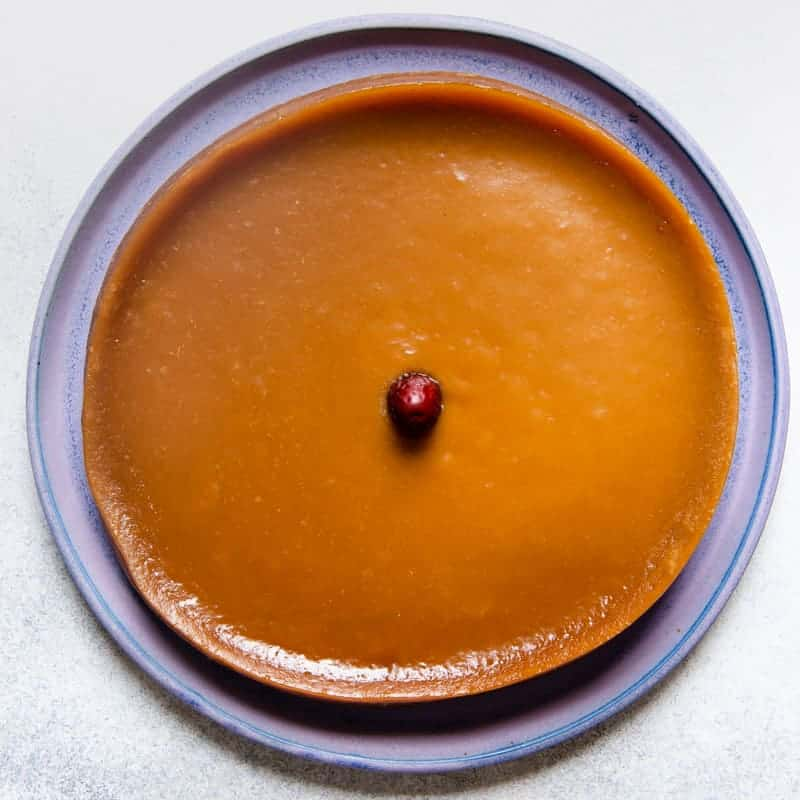

#37 - NEW YEAR CAKE (NIANGAO) - 糖年糕
This the most popular Chinese New Year food. You can find it everywhere before the Chinese New Year. This homemade version uses only a few ingredients and is not that hard to make.

INGREDIENTS:
- 500 g glutinous rice flour
- 100 g wheat starch
- 400 g slab sugar (片糖)
- 600 ml (1 ¼ cup) water
- 3 TBSP vegetable oil
- ½ piece red date for garnish
- 1-2 eggs
- Vegetable oil for frying
Directions:
- Put the slab sugar and water in a saucepan. Bring to boil and simmer until all the sugar is dissolved.
- Let the sugar water cool to 60ºC
- Mix the glutinous rice flour and wheat starch and put it through a sieve into a big bowl.
- Pour the sugar water into the flour mixture slowly, stirring with a wooden spatula continually, trying to break up the lumps.
- Mix in vegetable oil.
- Pass the mixture through a sieve to make sure that there is no lumps in it.
- Oil an approx. 1200 ml circular container.
- Pour the mixture into a circular container, gently knock the container on the counter to make remove air bubbles and smooth out top surface.
- Garnish with a pitted red date.
- Heat a steamer big enough to hold the circular container.
- When the water boils, put in the rice cake mixture and steam for 1 ½ hour in low heat.
- Let the rice cake cool completely and then put in the refrigerator for at least 24 hours to harden.
- Before serving, remove the rice cake from the refrigerator, slice it into 1 ½ x 2 x ½ inch slices.
- Beat the eggs and dip the rice cake into the egg mixture.
- Heat up a frying pan with oil.
- When oil is hot, line the dipped rice cake in the frying pan, single layer.
- Fry on low heat, until both side of the rice cake is lightly brown.
- Serve.
(Serves 1 person)
Note:
- If you cannot wheat starch, you may swap it out by equal amount of glutinous rice flour. The finished product will be a bit stickier and chewier.
- Slab sugar is raw cane sugar in the shape of rectangular slab. You may use other kinds of raw cane sugar if you cannot find slab sugar.
- It is important to let the sugar water to cool down before mixing with the flour, so it will not cook the flour and make it very hard to stir and lumpy.
- After step 11, the rice cake is ready to eat. However, it is very gluey and sticky, and different to cut. I prefer to serve it after it hardens and re-fried.